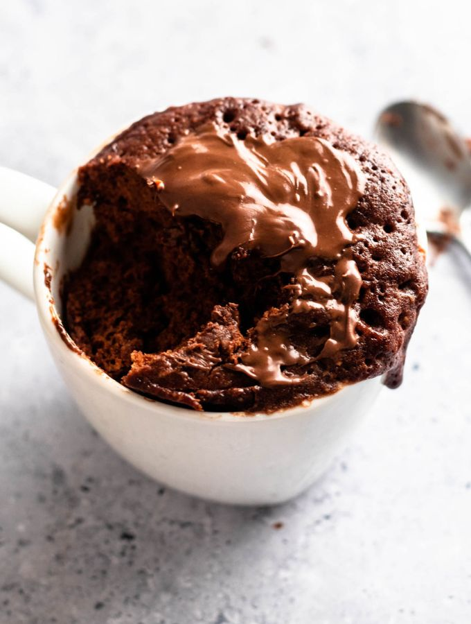

Mug Cake Recipe
Home

Description
Three ingredient mug cake recipe is a delicous indulgent mug cake in minutes
Ingredients
- 1/4 cup Nutella
- 2 Tablespoons Flour
- 1 Egg
Steps
- In a microwave-safe tall mug (at least 12 oz or 350 ml), start by cracking the egg into the mug. Add the Nutella and flour.
- Using a fork or small whisk, mix everything together until you have a smooth batter. Ensure that there are no lumps of flour remaining
- Place your mug in the microwave and cook on high for about 1 minute and 15 seconds to 1 minute and 30 seconds. The exact time may vary depending on your microwave's power, so keep an eye on it as it cooks.
- Once done, carefully remove the mug from the microwave (it will be hot). The cake should look set but still slightly moist on top – that's when it's perfect.
- Serve with more Nutella on top, powdered sugar, whipped cream, or enjoy it by itself!
- Let it cool for a minute or two before digging in with a spoon directly from the mug or transferring it onto a plate if you prefer.